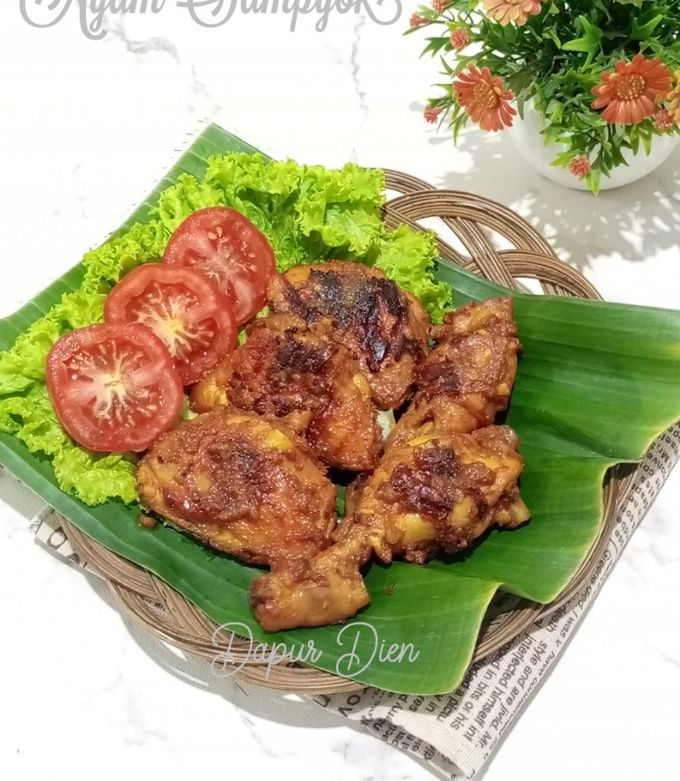
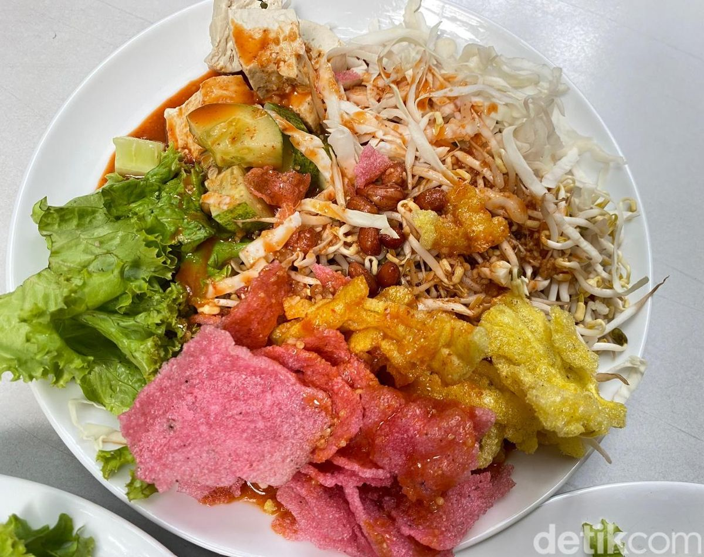
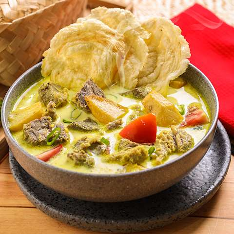
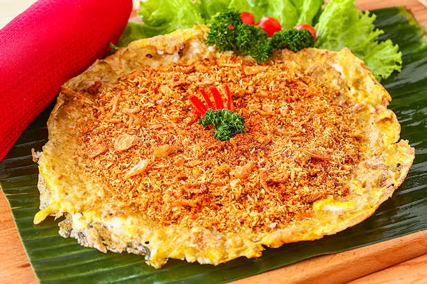
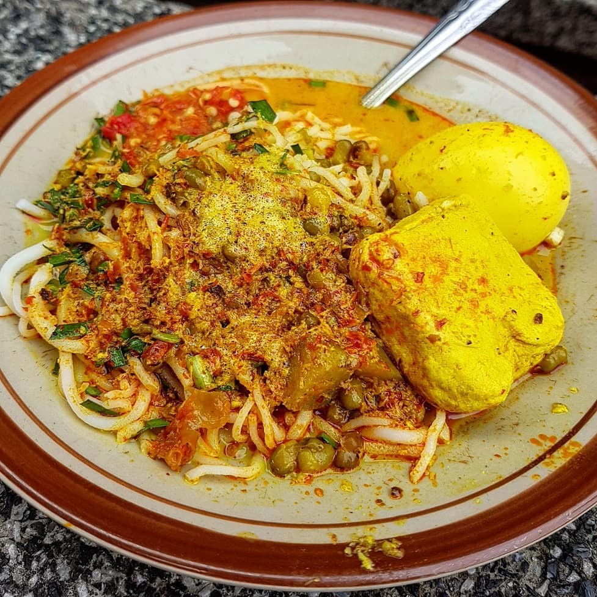
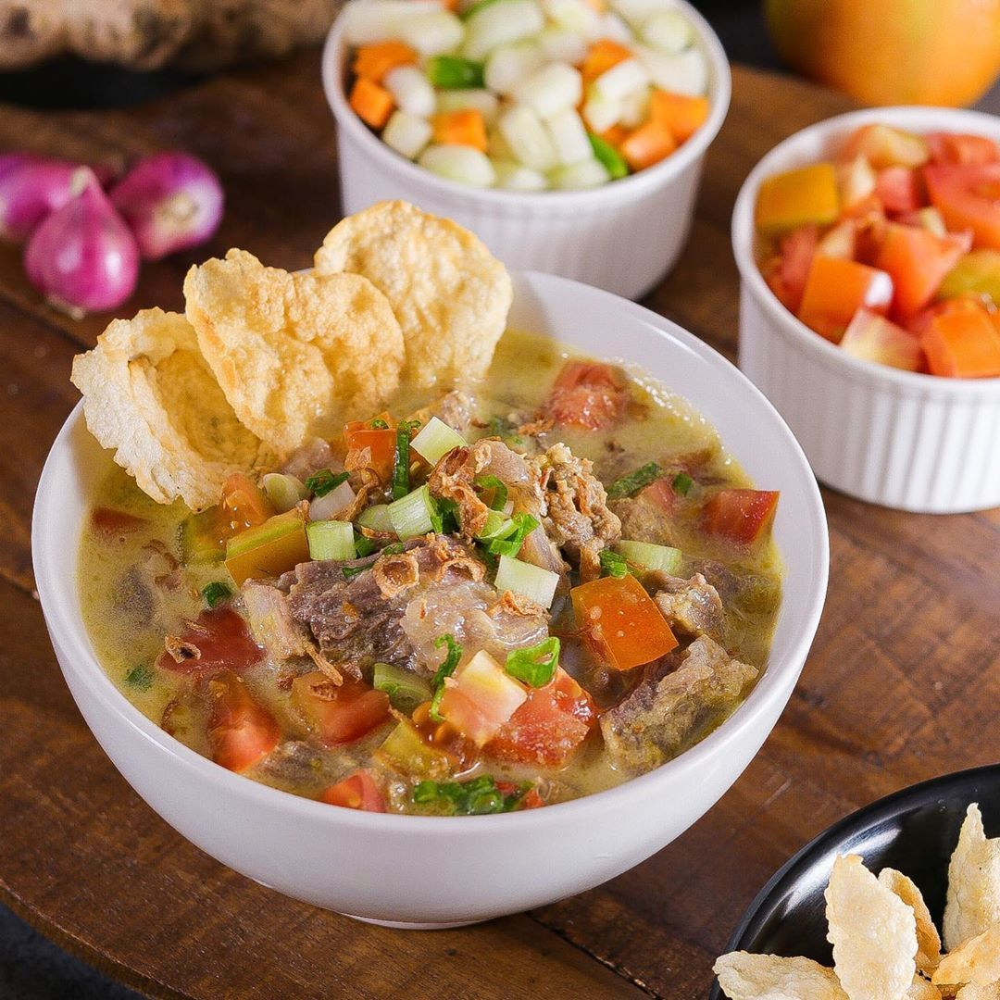
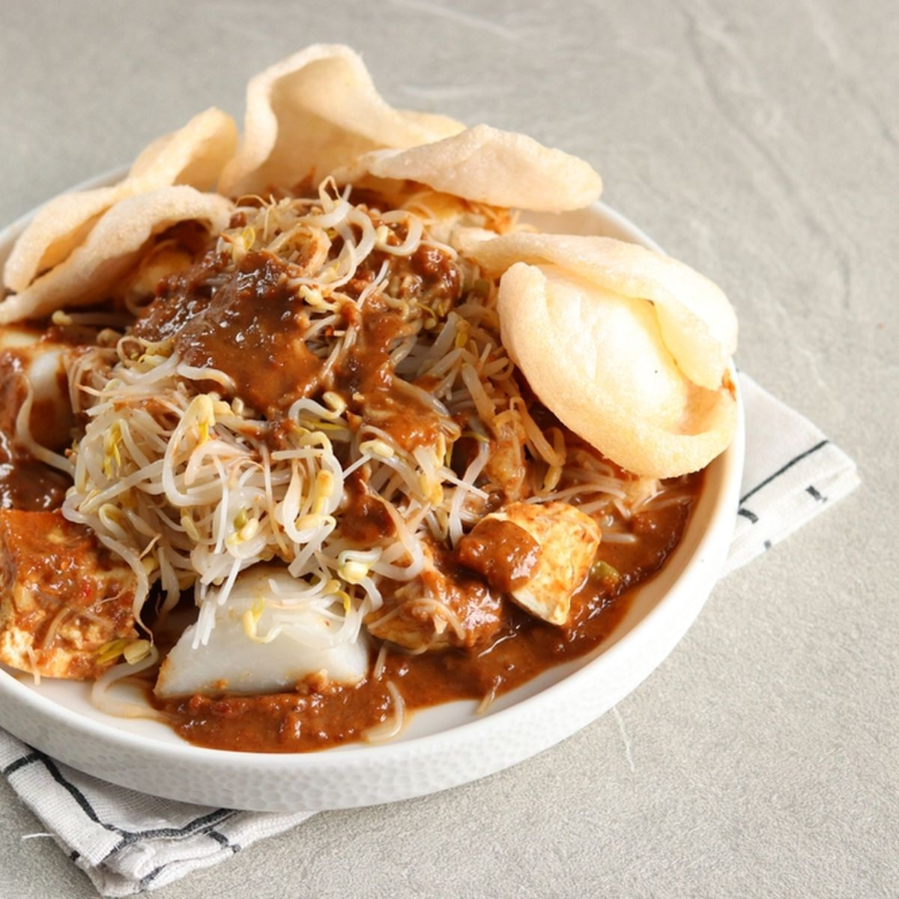

01
Ayam Sampyok
A Betawi chicken dish with rich spices and a savory taste. The chicken is cooked slowly so the spices can absorb into the meat.
JAKARTA'S LOCAL FLAVORS
A taste of Jakarta through some of its traditional and popular local dishes.

01
A Betawi chicken dish with rich spices and a savory taste. The chicken is cooked slowly so the spices can absorb into the meat.

02
A refreshing traditional dish made from vegetables, tofu, and other ingredients, served with a flavorful dressing.

03
A traditional Betawi soup with a rich, savory broth and tender beef. It is commonly enjoyed with rice or other side dishes.

04
One of Jakarta's iconic traditional foods, made from eggs, sticky rice, and savory toppings such as shredded coconut.

05
A flavorful noodle soup with a creamy yellow broth and a combination of spices, vegetables, and other toppings.

06
A famous Jakarta soup made with beef, rich broth, and aromatic spices. It is commonly served with rice.

07
A simple but popular dish consisting of tofu, rice cakes, bean sprouts, noodles, and a sweet peanut sauce.

08
Jengkol cooked in a sweet and savory dark sauce with traditional Indonesian spices.